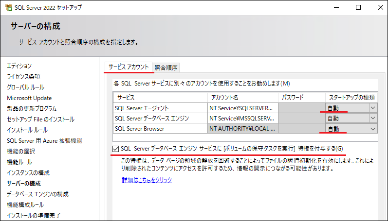
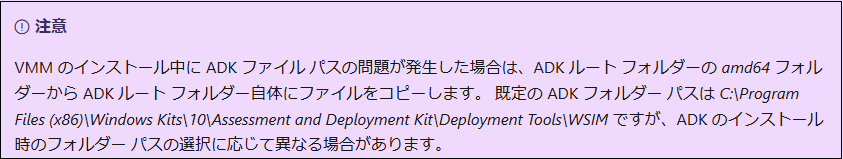
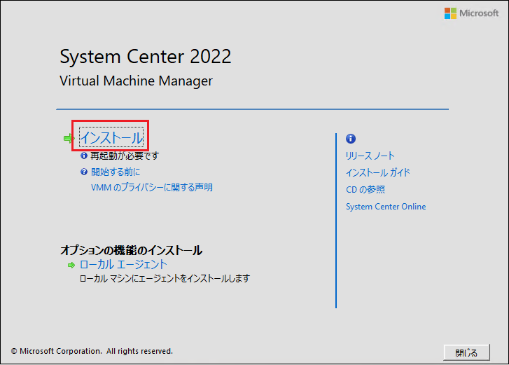

皆様こんにちは、System Center サポートチームの 石原 です。
System Center Virtual Machine Manager（以後 SCVMM）は、複数の Windows Server フェールオーバー クラスター環境を統合管理するシステムです。異なるクラスター間で仮想マシンのライブ マイグレーションが可能になるほか、システム全体で参照可能なファイル置き場 (ライブラリ サーバー) の構築、類似の仮想スイッチの設定を簡易的に反映できる設定 (論理スイッチ) などが利用できます。また、VMWare vCenter と連携することで VMWare VM を Hyper-V VM に移行することができます。
SCVMM の構成は、IT インフラ環境の規模や運用要件に応じて変わりますが、検証等の目的で簡易的に最短で SCVMM を構築されたいケースがあります。そういったケースに備えて、本記事では、1 台の Windows Server に SCVMM の主コンポーネントの SCVMM 管理サーバーと SCVMM コンソールをインストールして、SCVMM コンソールにサインインできるまでの手順を画面ショット付きで紹介します。
SCVMM 導入の流れ
SCVMM 導入の大まかな流れは下図の通りです。
最初に SCVMM 管理サーバーと SVMMM コンソールをインストールして SCVMM 環境を構築します。
その後、SCVMM で管理する Windows Server フェールオーバー クラスターを管理対象として追加します。
クラスターのメンバーではない独立した Hyper-V ホストを管理対象に追加することも可能です。
また、VMWare vCenter と連係することで、VMWare 環境を管理することもできます。
※ 構築フェーズの計画ガイドについては、以下のマニュアル サイトをご参照ください。
VMM のインストールを計画する
本記事では、1 台の Windows Server にデータベース、SCVMM 管理サーバー、SCVM コンソールをインストールする手順 (上の図の赤枠で囲った部分の作業) を画面ショット付きで紹介します。
ドメインに参加した Windows Server 2022 (メモリ 16 GB 以上) を予め 1 台ご準備ください。
データーベース (Microsoft SQL Server 2022) の導入
SCVMM では、SCVMM のシステム情報、管理対象のホストの情報、ジョブ履歴などの保管にデーターベースを用います。
SCVMM 管理サーバーをインストールする前に最初にデーターベースの準備が必要です。
SCVMM 2022 は Microsoft SQL Server 2016/2019/2022をサポートします。(SQL Server の要件)
※ SQL Server 2022 は SCVMM 2022 UR1 以降でサポート対象になりました。そのため、SCVMM 2022 を構築後、すぐに最新の UR (更新プログラム のロールアップ) を適用してください。UR の適用は、サポートブログ UR (更新プログラム のロールアップ) を適用 を参考にしてください。
SCVMM 用の SQL Server のインストール手順は以下の通りです。
1. SQL Server 2022 のインストール モジュールを準備
① SQL Server 2022 のインストーラーと ② 最新の累積的な更新プログラム(CU) をダウンロードして、SCVMM をインストールする Windows Server 内にコピーします。
① SQL Server 2022 のインストーラー (評価版) は SQL Server のダウンロード よりダウンロードできます。
ダウンロードした EXE ファイル (SQL2022-SSEI-Eval.exe) を管理者で実行すると以下の画面が表示されます。
メディアのダウンロードをクリックすることで、ISO ファイル形式のインストーラーをダウンロードできます。
② SQL Server 2022 の累積的な更新プログラムは Download SQL Server® 2022 for Microsoft® Windows の最新の累積的な更新プログラム よりダウンロードできます。( ※ 本記事では、掲載日時点で最新の CU 14 を使用します。)
2. SQL Server 2022 のインストール
インストールファイルの準備ができましたら、実際にインストールを実行します。
SCVMM をインストールする Windows Server にドメイン管理者でサインインします。
SQL Server 2022 のインストーラーを選択して、右クリック メニューでマウントします。

マウント先のドライブで setup.exe を選択して、右クリック メニューの [管理者として実行] をクリックします。
インストール画面を表示して、[SQL Server の新規スタンドアロン インストールを実行するか、既存のインストールに機能を追加] をクリックします。
本記事では Evaluation のまま [次へ] ボタンをクリックします。
ライセンス条項を確認して、 [次へ] ボタンをクリックします。
本記事では [Microsoft Update を使用して更新プログラムを確認する] は未チェックのまま [次へ] ボタンをクリックします。
事前検証でエラーが無いことを確認します。
[Windows ファイアウォール] の警告が出ていますが、本記事では SCVMM 管理サーバーを同一サーバーにインストールするため SQL Server へのリモート接続は必須ではないことから、このまま [次へ] ボタンをクリックします。本記事では [SQL Server 用 Azure 拡張機能] はチェックを外して [次へ] ボタンをクリックします。
[データーベース エンジン サービス] にチェックを入れて [次へ] ボタンをクリックします。
本記事では [既定のインスタンス] のまま [次へ] ボタンをクリックします。
[サーバーの構成] の [サービス アカウント] タブ画面で [SQL Server エージェント] と [SQL Server Browser] のスタートアップの種類を [自動] にします。
また、[SQL Server データベース エンジン サービスにボリューム メンテナンス タスクを実行する特権を付与する] にチェックします。
[サーバーの構成] の [照合順序] タブ画面でサポートされた日本語の照合順序 ( Japanese_CI_AS、もしくは Japanese_XJIS_100_CI_AS ) が指定されていることを確認して [次へ] ボタンをクリックします。
本記事では認証モードは [Windows 認証モード] を選択し、SQL Server 管理者には [現在のユーザーの追加] ボタンをクリックして、インストール作業を実行しているユーザーを設定します。
その他の設定はそのまま [次へ] ボタンをクリックします。[インストール] ボタンをクリックして、インストールを実行します。
完了画面に表示された [状態] がすべて [成功] になっていることを確認して [閉じる] ボタンをクリックします。
以上で SQL Server 2022 インスタンスの準備は完了です。
3. SQL Server 2022 の累積的な更新プログラム ( CU 14 ) を適用する。
更新プログラムのインストーラーを選択して、右クリック メニューの [管理者として実行] をクリックします。
ライセンス条項を確認して、 [次へ] ボタンをクリックします。
MSSQLSERVER にチェックが付いていることを確認して、 [次へ] ボタンをクリックします。
ファイルの確認が完了したら、 [次へ] ボタンをクリックして進みます。
[更新] ボタンをクリックして、更新プログラムのインストールを実行します。
完了画面に表示された [状態] がすべて [成功] になっていることを確認して [閉じる] ボタンをクリックします。
以上で SCVMM 用の データーベースの準備は完了です。
※ 以下の警告が表示された場合は、更新プログラムのインストール完了後、一度 Windows Server を再起動します。
==================
【補足】
検証用の SCVMM の最短構築に際しては必須ではありませんが、SQL Server の管理に有用な SQL Server Management Studio (SSMS) はインストールされることを推奨します。SSMS は、SQL Server Management Studio (SSMS) のダウンロード からダウンロードできます。
==================
SCVMM 管理サーバーと SCVMM コンソールのインストール
データーベースの準備が完了したら、いよいよ SCVMM 管理サーバーと SCVMM コンソールのインストールになりますが、その前に前提条件のソフトウェアをインストールします。
詳細な手順については、以下のマニュアル サイトをご参照ください。
・SCVMM 管理サーバーをインストールする方法
・SCVMM コンソールをインストールする方法
前提条件のソフトウェア、SCVMM 管理サーバー、SCVMM コンソールのインストール手順は以下の通りです。
1. SCVMM 2022 の前提条件のソフトウェアのインストール
SCVMM 管理サーバーと SCVMM コンソールのインストール サーバーは、以下の前提条件を満たしている必要があります。
インストール コンポーネント
Windows Server 2022 の場合、PowerShell や .Net については最初から条件を満たしていると思いますので、Windows ADK をインストールします。Windows ADK のインストーラーは ココ からダウンロードできます。adksetup.exe と adkwinpesetup.exe をダウンロードします。
Windows ADK (adksetup.exe) を選択して、右クリック メニューの [管理者として実行] をクリックします。
インストール先を指定して、 [次へ] ボタンをクリックします。
Windows キット プライバシーを選択して、 [次へ] ボタンをクリックします。
使用許諾契約の内容を確認して、 [同意する] ボタンをクリックします。
SCVMM で必須の機能 [Deployment Tools] を残して [インストール] ボタンをクリックします。
[閉じる] ボタンをクリックします。
次に Windows ADK PE アドオン (adkwinpesetup.exe) を選択して、右クリック メニューの [管理者として実行] をクリックします。
Windows ADK 本体のインストール先がインストール パスにセットされていることを確認して、 [次へ] ボタンをクリックします。
Windows キット プライバシーを選択して、 [次へ] ボタンをクリックします。
使用許諾契約の内容を確認して、 [同意する] ボタンをクリックします。
Windows ADK 本体でインストールした [Deployment Tools] にチェックが入っていることを確認して [インストール] ボタンをクリックします。
[閉じる] ボタンをクリックします。
注意

新しい Windows ADK ではフォルダー構成が変更されているため、以下のコピー元フォルダー内の全ファイルをコピー先フォルダー内にコピーしてください。(※ 移動ではなくコピーしてください。)
コピー元：C:\Program Files (x86)\Windows Kits\10\Assessment and Deployment Kit\Deployment Tools\WSIM\amd64
コピー先：C:\Program Files (x86)\Windows Kits\10\Assessment and Deployment Kit\Deployment Tools\WSIM
2. SCVMM 2022 のインストール モジュールを準備
Microsoft Evaluation Center の System Center 2022 | Microsoft Evaluation Center からインストール ファイル [SCVMM_2022.exe] をダウンロードします。
ダウンロードしたファイルを SCVMM をインストールする Windows Server 内にコピーします。
3. インストール ファイルを解凍する
SCVMM をインストールする Windows Server にドメイン管理者でサインインします。
SCVMM 2022 のインストーラーを選択して、右クリック メニューの [管理者として実行] をクリックします。
インストール ファイル解凍ウィザードが開きますので、[Next] ボタンをクリックします。
ライセンス条項を確認して、 [Next] ボタンをクリックします。

インストール ファイルの解凍先を確認して、 [Next] ボタンをクリックします。
[Extract] ボタンをクリックして解凍を実行します。
[Finish] ボタンをクリックして、ウィザードを閉じます。
[C:\System Center Virtual Machine Manager] フォルダ配下にインストール用ファイルが展開されていることが確認できます。
4. SCVMM 管理サーバーと SCVMM コンソールのインストール
SCVMM をインストールする Windows Server にドメイン管理者でサインインします。
[C:\System Center Virtual Machine Manager] フォルダ配下の [Setup.exe] を選択して、右クリック メニューの [管理者として実行] をクリックします。
インストール ウィザードが起動するので、[インストール] をクリックします。
※ 「再起動が必要です」と表示されている場合は、一度、Windows を再起動してください。ただし、再起動直後でも表示される場合がありますので、その場合はこのまま進めてください。
インストールする機能の選択画面で [VMM 管理サーバー] にチェックを入れて、[次へ] ボタンをクリックして進みます。
SCVMM 管理サーバーには SCVMM コンソールが必ずインストールされますので、[VMM 管理サーバー] にチェックを入れると自動的に [VMM コンソール] にもチェックが入ります。[プロダクトキー] をお持ちの場合は入力します。評価版として構築する場合は空のまま [次へ] ボタンをクリックします。
※ 後述の手順で 180日以内にプロダクトキーを適用することで、評価版環境からライセンス適用環境に切り替えることができます。ライセンス条項を確認して、 [次へ] ボタンをクリックします。

[診断と使用状況のデータ] を確認して、 [次へ] ボタンをクリックします。
本記事では [Microsoft Update] は [オフ] を選択して [次へ] ボタンをクリックします。
インストール先フォルダを指定して、[次へ] ボタンをクリックします。
標準のインストール先は [C:\Program Files\Microsoft System Center\Virtual Machine Manager] です。データベースの構成画面で、SCVMM で使用するデータベース [VirtualManagerDB] を作成します。
[次の資格情報を使用する] にチェックを入れて、SQL Server インストール時に SQL Server 管理者として登録した AD アカウント情報を入力します。サービス アカウントおよび分散キー管理の構成画面に AD アカウント情報を入力して、 [次へ] ボタンをクリックします。
ポートの構成画面の設定を確認して、 [次へ] ボタンをクリックします。
ライブラリの構成画面の設定を確認して、 [次へ] ボタンをクリックします。
既定の設定では SCVMM 管理サーバーがライブラリ サーバーを兼ねて、SCVMM 管理サーバー内にライブラリ共有が作成されます。インストールの概要画面を確認して、 [インストール] ボタンをクリックして、インストールを実行します。
完了画面でエラーが出ていないことを確認して、[閉じる] ボタンをクリックしてウィザードを閉じます。
SCVMM コンソールのログイン画面が立ち上がりますので、接続をクリックすることでログインできます。
プロダクトキーの適用
SCVMM コンソールの左上のメニューバーで [バージョン情報] をクリックして、[アクティブ化] ボタンからプロダクトキーを入力することができます。
以上で、SCVMM 管理サーバーを導入して、SCVMM コンソールにログイン可能になりました。
このあと、[ファブリック] 画面で管理対象の フェールオーバー クラスターや Hyper-V ホストを追加したり、VMWare vCenter と連係することで、仮想化サーバー基盤の統合管理ができるようになります。
これらの手順についても、今後ブログで紹介したいと考えております。
更新プログラム のロールアップ
各種設定を進める前に最新の更新プログラムのロールアップを適用してください。
ロールアップを適用の際は、サポートブログ UR (更新プログラム のロールアップ) を適用 を参考にしてください。
SCVMM 導入の流れ で記載しました通り、インフラ環境や要件によって SCVMM 環境の各コンポーネントの構成や台数が変わります。メンテナンス時の可用性や耐障害性を考慮して、複数台の SCVMM 管理サーバーを導入して高可用性環境を構成することや、データーベースを SQL Server AlwaysOn 可用性グループで構成することも可能です。SCVMM 環境の構成については、要件定義や初期の設計フェーズにおいて検討いただければと存じます。
本番環境の構築においては多数の考慮事項がございますが、まずは今回の手順を進めていただくことで SCVMM コンソールにログインすることができたと思います。実際に SCVMM コンソールにログインして、SCVMM の画面構成、機能、操作性など検証いただければ幸いです。
※本情報の内容（添付文書、リンク先などを含む）は、作成日時点でのものであり、予告なく変更される場合があります。